A tangible interface for collaborative ambient music place stones, make music together.
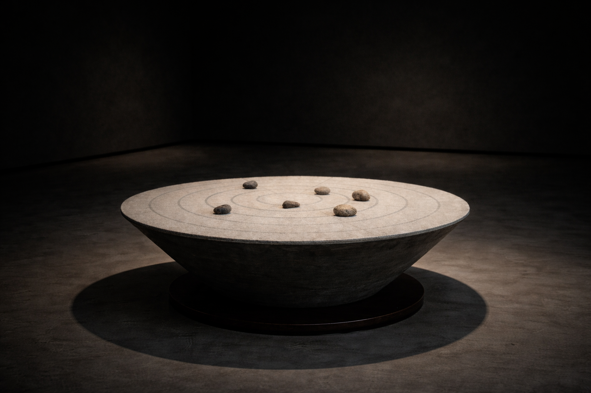
Course
ECE 546C tactile sensing + music became the lane.
Move real objects on a table — the program changes. No screen.
What if the same idea made music?
dynamicland.orgTurn what you place in the space into music.
This is SoundMat
Strangers in a shared space make ambient music—just by placing stones on felt.
Strangers, in a shared space, make ambient music together — just by placing stones on a felt.
In public space, it never demands attention.
Sound from behind and around you.
The mat invites touch; the installation lives in the architecture—connected to the scene, not a gadget on the floor.
Like a piece of furniture or art.
Designed to invite touch
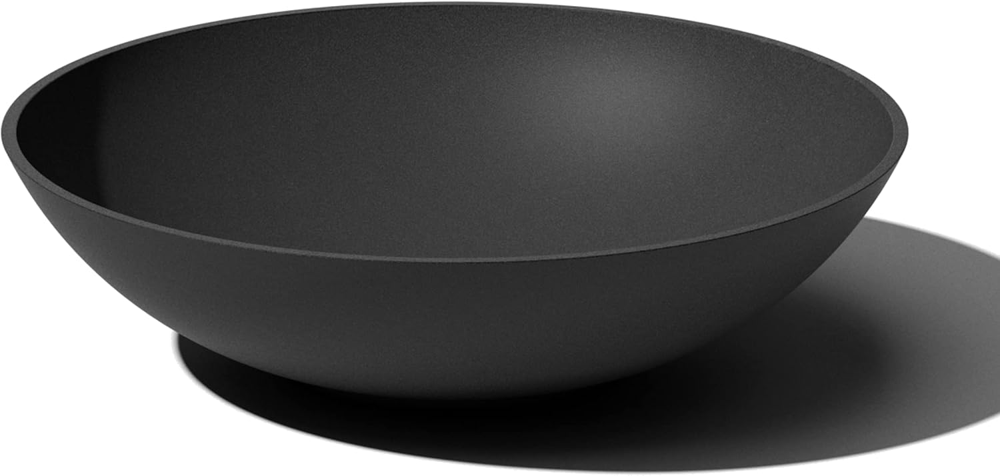
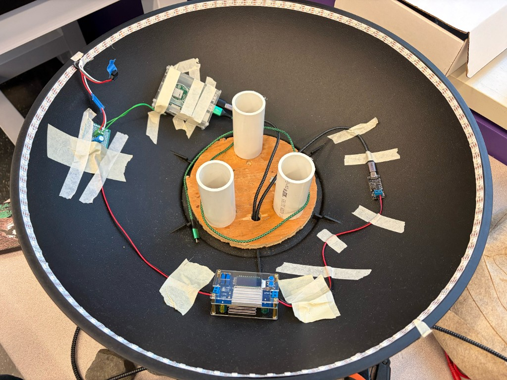
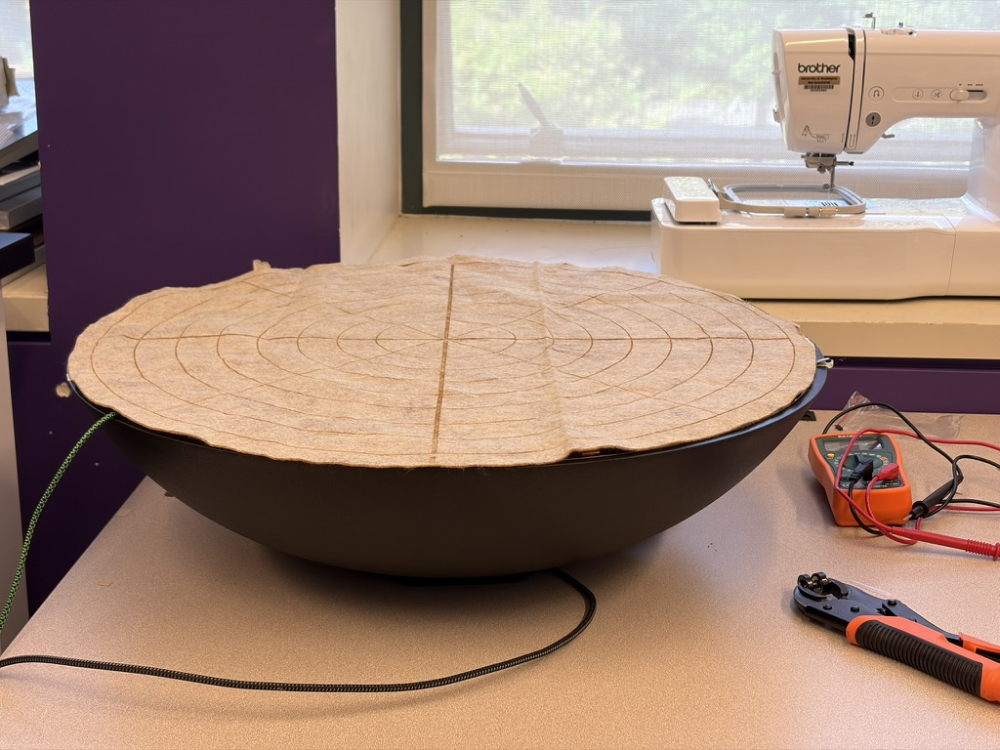
8 rings · 32 slices (16 in the inner 2 rings)
sensing zones
Inner 2 rings use 16 slices so the center does not crowd.
Ring tails
Each ring is laser-cut with a tail—conductive fabric passes through a matching hole in the board to the circuit in the cavity below.
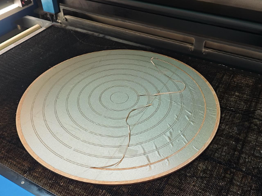
When cutting, each concentric ring includes a tail—a tab of conductive fabric that feeds through a matching hole in the board to the circuit in the cavity below.
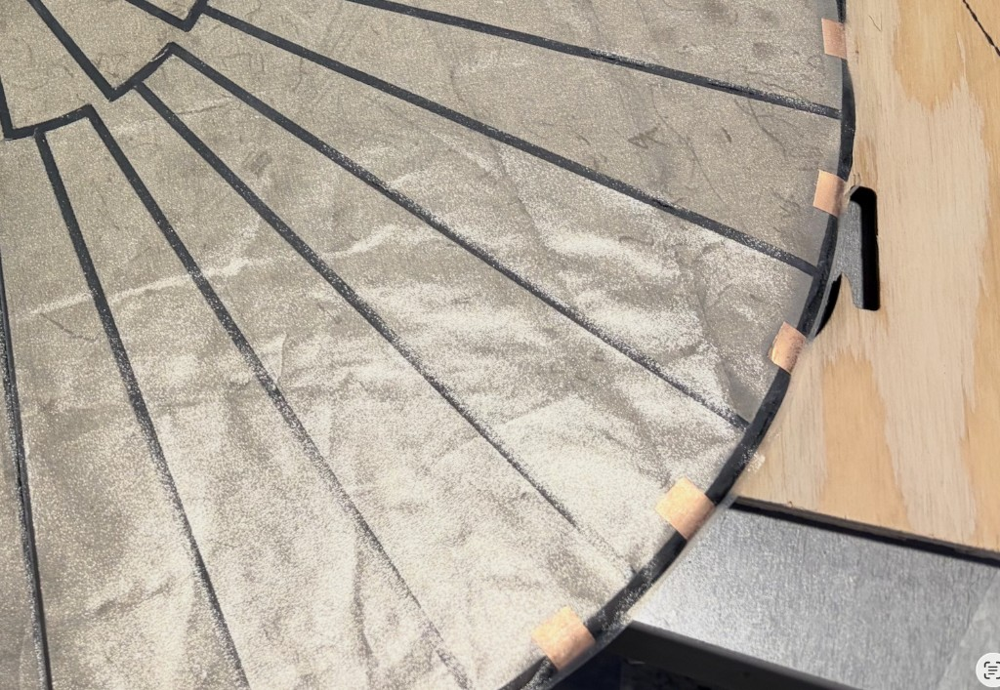
On the slices, copper foil tape at the outer rim folds under the board—connecting to the circuit and holding down the upper sensor stack.
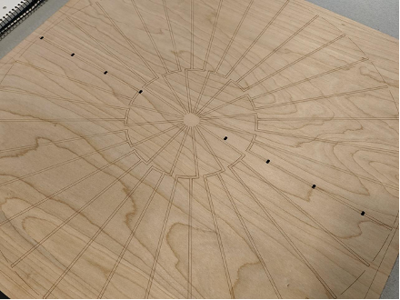
Holes in the hardwood board align with each ring tail so fabric leads reach the cavity—without every slice needing its own via.
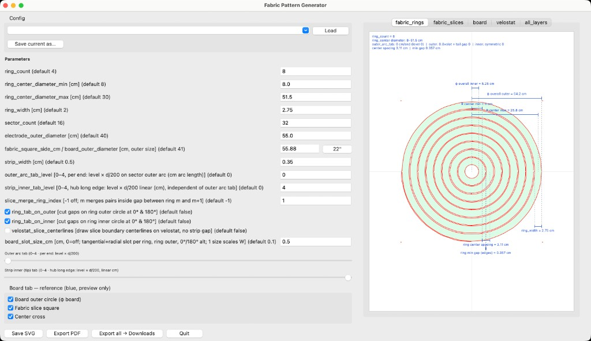
Parameters → Laser cutter cut files
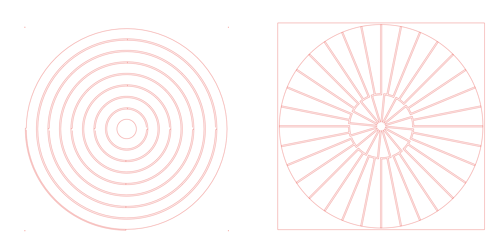
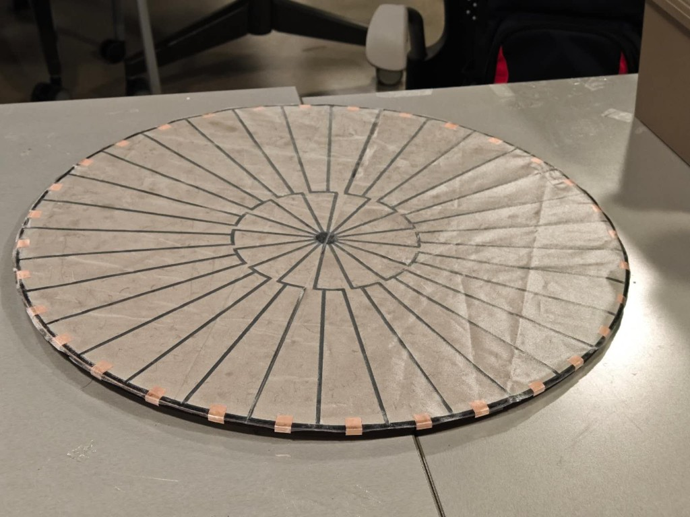
Touch captured. Next — the analog front-end that reads every zone.
Power in, data up, control out, sound out — every connection is power, data, or control.
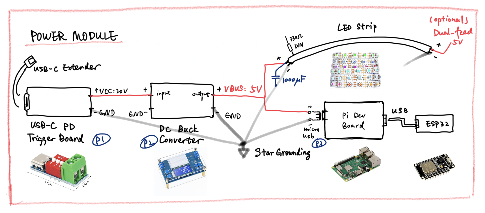
An elegant power solution
PD charger or fast-charge power bank.
Same USB-C port on the mat. 20 V. One cable.
Hardware DAC to the room
Not the Pi’s PWM jack — a USB DAC.
Onboard audio is PWM-simulated — noisy in a quiet public space. I2S is cleaner but more wiring. USB is plug-and-play.
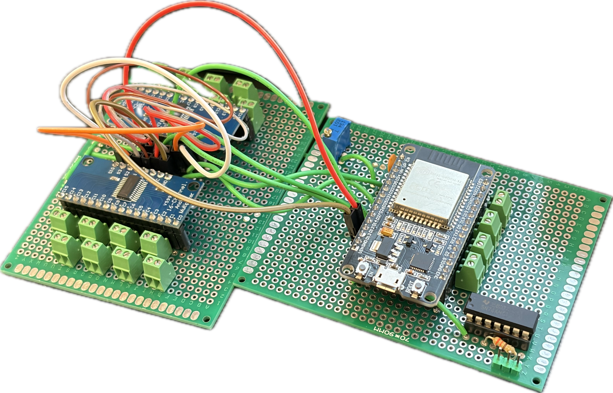
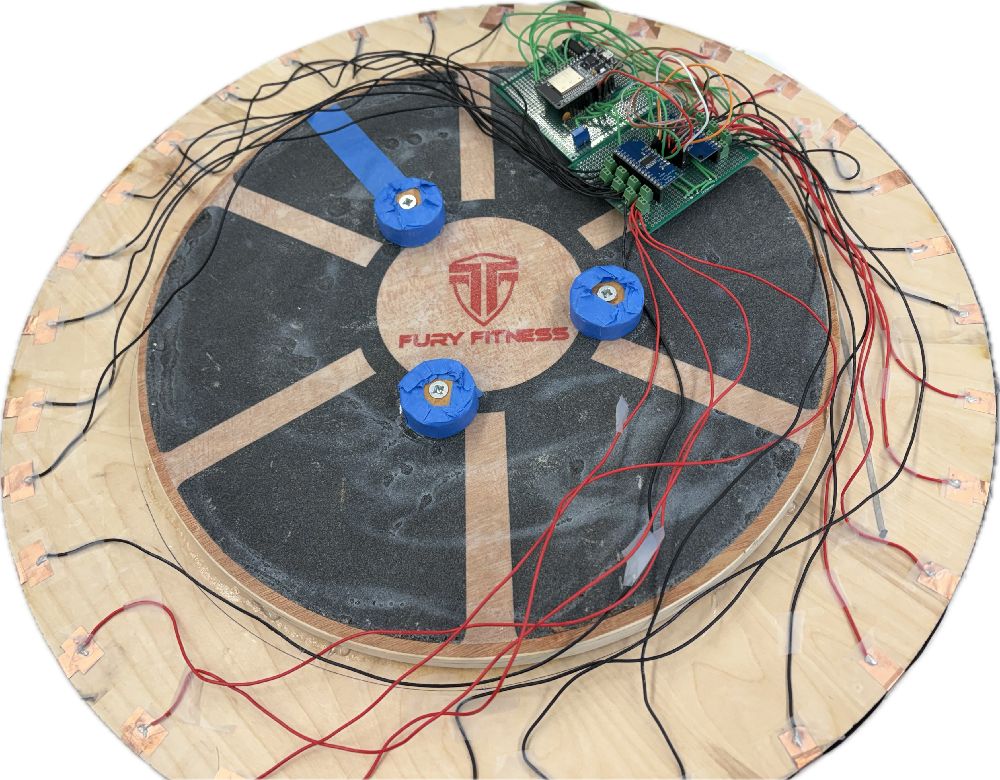
Analog captured. Next — the edge loop that turns readings into frames.
What it does
ESP32 on the mat reads every zone and drives the LEDs; the Pi turns pressure into music.
Firmware is the translator on the mat — not where music is made.
One UART cable · 921600 baud · S up, L down
ESP32 → Pi
256 pressure values
Pi → ESP32
108 RGB colours
Plain ASCII · XOR checksum · drop bad lines
Place stones on the felt – Visualization
Digitized and streaming. Next — what turns numbers into music.
Pressure is already numbers.
Runs on the Raspberry Pi inside the device.
Every song is just config. Swap the files — get a new piece. The program never changes.
bpm = 120
key = "C"
progression = "1"
melody = "1"
drums = "lofi"
key "C" → "G" — and the whole piece transposes.
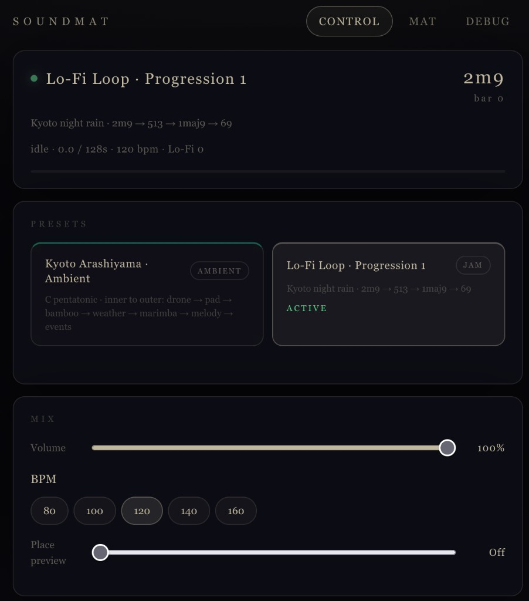
Problem
Same Jam, 50 stones: Mac cruises with 5–10× headroom; the Pi pegs scsynth at 99.9% and the XRuns never stop.
Works on Mac
crackling, laggy playback on the Pi
5–10× CPU spare · no dropouts
JACK XRuns nonstop · unlistenable
Same code, same 50 stones — the only thing that changed is the box we ship on.
Python, SuperCollider, and declarative manifests
.
├── README.md
├── SETUP.md
├── pyproject.toml
├── uv.lock
├── deploy
│ └── pi
├── manifest
│ ├── ambient
│ │ └── kyoto.toml
│ └── jam
│ ├── lofi_1.toml
│ └── data
│ ├── lofi_mapping.yaml
│ ├── drums
│ │ └── lofi_loop.yaml
│ ├── melodies
│ │ └── 1
│ │ ├── 1maj9.yaml
│ │ ├── 2m9.yaml
│ │ ├── 513.yaml
│ │ └── 69.yaml
│ ├── progressions
│ │ └── 1.yaml
│ └── rings
│ └── lofi.yaml
├── sc
│ ├── compile.scd
│ ├── _dur.wav
│ ├── synthdefs
│ │ ├── ambient
│ │ │ ├── diapason.scd
│ │ │ └── marimba.scd
│ │ ├── core
│ │ │ ├── master.scd
│ │ │ ├── players.scd
│ │ │ └── reverb.scd
│ │ └── jam
│ │ ├── 00_common.scd
│ │ ├── chord_pad.scd
│ │ ├── marimba.scd
│ │ ├── master.scd
│ │ ├── pad_pluck.scd
│ │ ├── pluck_bass.scd
│ │ ├── reverb_bus.scd
│ │ ├── rhodes.scd
│ │ ├── sub_bass.scd
│ │ └── drums
│ │ ├── hihat.scd
│ │ ├── kick.scd
│ │ └── snare.scd
│ ├── compiled
│ │ ├── diapasonHold.scsyndef
│ │ ├── diapasonNote.scsyndef
│ │ ├── jam_chord_pad.scsyndef
│ │ ├── jam_hihat.scsyndef
│ │ ├── jam_kick.scsyndef
│ │ ├── jam_marimba.scsyndef
│ │ ├── jam_master.scsyndef
│ │ ├── jam_pad_pluck.scsyndef
│ │ ├── jam_pluck_bass.scsyndef
│ │ ├── jam_reverb_bus.scsyndef
│ │ ├── jam_rhodes.scsyndef
│ │ ├── jam_snare.scsyndef
│ │ ├── jam_sub_bass.scsyndef
│ │ ├── marimbaNote.scsyndef
│ │ ├── master.scsyndef
│ │ ├── playMono.scsyndef
│ │ ├── playMonoTune.scsyndef
│ │ ├── playStereo.scsyndef
│ │ ├── playStereoTune.scsyndef
│ │ └── reverb.scsyndef
│ └── assets
│ └── samples
│ └── kyoto
│ ├── ring01
│ │ ├── big-bell
│ │ └── deep-boom
│ ├── ring2
│ │ └── mid-pad
│ ├── ring3
│ │ ├── stream
│ │ ├── train
│ │ ├── walk
│ │ └── wind
│ ├── ring4
│ │ ├── rain
│ │ └── thunder
│ ├── ring5
│ ├── ring6
│ │ └── pieces
│ └── ring7
│ └── incidents
├── scripts
│ ├── compile_synths.py
│ ├── replay_test.py
│ └── sync_samples_to_pi.sh
├── soundmat
│ ├── __init__.py
│ ├── __main__.py
│ ├── app.py
│ ├── config.py
│ ├── ambient
│ │ ├── __init__.py
│ │ ├── app.py
│ │ ├── buffers.py
│ │ ├── led.py
│ │ ├── mapping.py
│ │ ├── state.py
│ │ ├── tracker.py
│ │ └── voices.py
│ ├── core
│ │ ├── __init__.py
│ │ ├── esp32_serial.py
│ │ ├── osc.py
│ │ ├── sc_server.py
│ │ ├── services.py
│ │ ├── led
│ │ │ ├── __init__.py
│ │ │ ├── offset.py
│ │ │ └── writer.py
│ │ └── sensor
│ │ ├── __init__.py
│ │ ├── frame.py
│ │ ├── map.py
│ │ ├── mock_reader.py
│ │ ├── normalize.py
│ │ ├── reader.py
│ │ └── serial_reader.py
│ ├── jam
│ │ ├── __init__.py
│ │ ├── app.py
│ │ ├── config_loader.py
│ │ ├── ring_config.py
│ │ ├── types.py
│ │ ├── bridge
│ │ │ ├── __init__.py
│ │ │ ├── master_fx.py
│ │ │ └── synth_bridge.py
│ │ ├── event
│ │ │ ├── __init__.py
│ │ │ ├── drum_engine.py
│ │ │ ├── event_engine.py
│ │ │ ├── harmony_engine.py
│ │ │ └── sensor_state.py
│ │ ├── led
│ │ │ ├── __init__.py
│ │ │ ├── layers.py
│ │ │ └── renderer.py
│ │ ├── scheduler
│ │ │ ├── __init__.py
│ │ │ ├── scanline.py
│ │ │ ├── song_position.py
│ │ │ ├── timing.py
│ │ │ └── transport.py
│ │ └── theory
│ │ ├── __init__.py
│ │ ├── degree.py
│ │ ├── tempo.py
│ │ └── tonality.py
│ ├── modes
│ │ ├── __init__.py
│ │ └── base.py
│ └── web
│ ├── __init__.py
│ ├── server.py
│ └── static
│ ├── debug.html
│ ├── index.html
│ ├── mat.html
│ └── soundmat.css
└── tests
├── conftest.py
├── test_control_debounce.py
├── test_drums.py
├── test_esp32_serial.py
├── test_event_engine.py
├── test_frame.py
├── test_jam_integration.py
├── test_led.py
├── test_master_fx.py
├── test_sensor_map.py
├── test_sensor_state.py
├── test_theory.py
├── test_timing.py
└── test_wire_normalize.py
lines of code
Music computed. Next — how it reaches your ears and eyes.
The design of how touch and place become music you can hear.
Years of playing and writing before SoundMat.
15 years
Classical training from childhood
5 years
Orchestra section · ensemble reading
Jazz band
Comping, voicings, live sets
Also
Portable harmony & song accompaniment
Pop
Charts, fills, and groove on demand
Classical
Form, counterpoint, and scoring
Anyone should make it sound good — and still feel they did it.
Kyoto, Arashiyama. The rings aren’t instruments — they’re layers of one scene that unfolds as stones are added.
A Lo-Fi loop you build together. A scan line sweeps the circle — where you place a stone sets the time, the ring sets the instrument.
The tension
Two pulls on every music interface — we built Ambient and Jam instead of choosing one side.
Kyoto · sound pool
Rotating scan · in key
Ambient leans safe. Jam leans feedback.
Why Lo-Fi
Warm, loop-based, forgiving — made for a round mat and strangers playing together.
Fixed layer · always on
8-bar chord loop under everything — you never trigger pads from the mat.
key once — melody, bass, and pads followFixed layer
A×1 → B×1 → C×2 → A×1 → D×2 → A×1
X accent x ghost
Time on the mat
The scan line is a playhead — where you drop a stone is when it fires.
Your layer
Ring = voice · sector = when · scan = trigger
R7 Marimba · R6/R5 keys · R4 pluck · R3 bass · R2 sub
^ high _ bass __ sub
Control hub
The two center rings are the on/off switch: add stones to start the music, clear them to stop.
Sensor → analog → firmware → software → sound and light — one sculpture, one USB-C cable. Next: we play it live.
Advisor
Prof. Yiyue Luo
For guidance throughout the project.
Support
Prof. Meichun Liu
Division of Design · School of Art + Art History + Design
Cover mat design
Po-Yu Chen & Chenfei Ma
Design Students · School of Art + Art History + Design
Five minutes. From silence, to a control stone, to a full Lo-Fi loop, and back to silence.
Hanlin Xue, Sora Kim
Advisor · Prof. Yiyue Luo · UW ECE 546C · Spring 2026